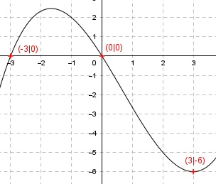

Aufgabe 40 Der Graph einer ganzrationalen Funktion 3. Grades schneidet die x-Achse an den Stellen 0 und -3 und hat bei (3|-6) ein Minimum. Wie lautet seine Funktionsgleichung?  Allgemeine Form einer ganzrationalen Funktion 3. Grades: f(x) = ax3 + bx2 + cx + d f’(x) = 3ax2 + 2bx + c f’’(x) = 6ax + 2b 4 Bedingungen: 1. Schneidet die x-Achse an der Stelle 0 bedeutet: f(0) = 0 --> a * 03 + b * 02 + c * 0 + d = 0 --> d = 0 2. Schneidet die x-Achse an der Stelle - 3 bedeutet: (d = 0 eingesetzt) f(-3) = 0 --> a * (-3)3 + b * (-3)2 + c * (-3) = 0 --> -27a + 9b - 3c = 0 I 3. Hat bei (3|-6) ein Minimum bedeutet zum einen: (d = 0 eingesetzt) f(3) = -6 --> a * 3³ + b * 32 + c * 3 = -6 --> 27a + 9b + 3c = -6 II 4. Hat bei (3|-6) ein Minimum bedeutet zum anderen: f’(3) = 0 --> 3a * 32 + 2b * 3 + c = 0 --> 27a + 6b + c = 0 III I * II -27a + 9b - 3c = 0 27a + 9b + 3c = -6 -------------------- 18b = -6 |:18 6 1 b = - ---- = - --- 18 3 I + III -27a + 9b - 3c = 0 27a + 6b + c = 0 ------------------ 15b - 2c = 0 IV b = -(1/3) in IV eingesetzt: 15 * -(1/3) - 2c = 0 -5 - 2c = 0 +2c -5 = 2c |:2 c = -2,5 b = -(1/3) und c = -2,5 in II eingesetzt. 27a + 6 * -(1/3) - 2,5 + c = 0 27a - 2 - 2,5 = 0 27a - 4,5 = 0|+4,5 27a = 4,5 |:27 4,5 1 a = ----- = --- 27 6 Gesuchte Funktionsgleichung: f(x) = (1/6)x3 - (1/3)x2 - 2,5x